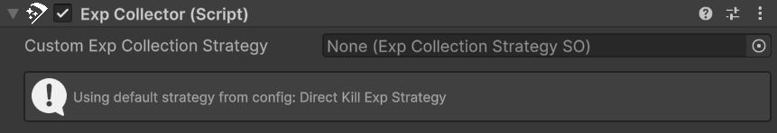
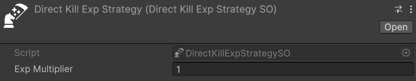
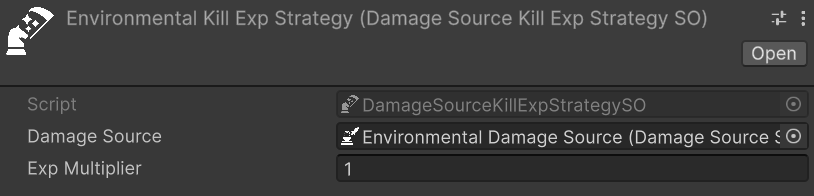
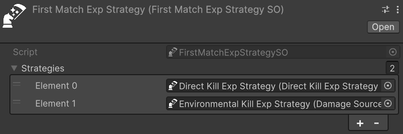

Experience Collection
Experience collection is the mechanism through which entities earn experience points when they contribute to enemy kills (or entities deaths in general in some cases). In Astra RPG Health, the system revolves around two actors: the collector, the entity that receives experience, and the victim, the entity that dies and provides it.
When a victim dies, its EntityHealth raises a global EntityDied event. Any ExpCollector component listening to that event evaluates its configured strategy to determine whether XP should be awarded — and if so, extracts the XP amount from the victim and forwards it to the collector's EntityLevel. The entire validation and collection logic lives inside a dedicated Experience Collection Strategy asset, making it straightforward to swap, extend, or compose strategies without touching any component code.
Important
Experience collection relies on the global EntityDied event being correctly configured on each entity's EntityHealth. Without it, ExpCollector will never be notified of kills. See Global Events for the setup details.
Prerequisites
Before setting up experience collection, ensure the following are in place.
On each victim entity:
- The victim must expose experience through an
ExpSourcecomponent. The Astra RPG Framework provides a concreteExpSource : MonoBehaviourthat stores the XP amount and a harvested flag. Attach this component to any entity that should provide XP when it dies, and configure the amount accordingly. Refer to the Framework documentation for details: https://electricdrill.github.io/AstraRpgFrameworkDocs/MD/workflows.html#exp-source
On the collector entity:
- The collector must be an entity. Therefore, it must have the
EntityCorecomponent.
Setting Up the Exp Collector
ExpCollector is the component that bridges the global death event and the configured strategy. Add it to any entity that should receive XP from kills.
Because ExpCollector carries [RequireComponent(typeof(EntityDiedGameEventListener))], Unity automatically attaches an EntityDiedGameEventListener to the same GameObject when you add ExpCollector. This listener is what connects the global EntityDied event to the component's logic.
The following image shows the ExpCollector inspector:

Once both components are on the GameObject, two things must be wired manually in the inspector:
- On the
EntityDiedGameEventListener, assign the globalEntityDiedgame event SO to its Event field. This must be the same event asset that is assigned to eachEntityHealthin the scene — that is what makes the listener fire when any entity dies. - On the Response UnityEvent of the
EntityDiedGameEventListener, add a callback and wire it toExpCollector.CheckCollectKillExp. You should find it under theDynamic EntityDiedContextsection of the context menu.
Note
The event wiring described above is fully manual and must be done in the inspector. An automatic setup will be evaluated for a future release.
Custom Exp Collection Strategy is the optional per-entity override. Assign a strategy here to give this specific collector its own behavior — for example, a boss that earns XP only from specific kill types, or a trap system with its own award logic. When left empty, the collector falls back to the project-wide default configured in AstraRpgHealthConfigSO (see Default Strategy in Package Configuration).
Inspector Status Box
The custom ExpCollector inspector includes a status indicator that shows at a glance whether an active strategy is in place:
- Info — "Using custom strategy: [name]": a Custom Exp Collection Strategy is assigned on this component.
- Info — "Using default strategy from config: [name]": no custom strategy is assigned, but a default is found in the
AstraRpgHealthConfigSO. - Warning — "No AstraRpgHealthConfig found…": no package configuration asset is in scope. See Package Configuration for setup details.
- Warning — "No default experience collection strategy configured in AstraRpgHealthConfig…": a configuration asset exists but no Default Exp Collection Strategy is set on it.
Default Strategy in Package Configuration
Collectors without a Custom Exp Collection Strategy fall back to the Default Exp Collection Strategy set in the AstraRpgHealthConfigSO (see Package Configuration - Experience). Configuring this field once means every bare ExpCollector in the project inherits the same behavior without needing an explicit assignment on each one.
Strategy resolution at runtime follows this order:
- Custom strategy assigned on the
ExpCollector→ used directly. - No custom strategy → default strategy from
AstraRpgHealthConfigSO→ used. - No custom strategy and no config or default → a warning is logged and no XP is collected.
Built-in Strategies
Three strategies are provided out of the box. Each is a ScriptableObject asset you create, configure, and assign to an ExpCollector or set as the project default in AstraRpgHealthConfigSO.
Direct Kill
Relative path: Astra RPG Health -> Exp Collection Strategies -> Direct Kill
DirectKillExpStrategySO is the most straightforward strategy: the collector receives XP only if it personally dealt the finishing blow. This is the natural choice for games where XP belongs exclusively to the entity that secured the kill.
The following image shows a DirectKillExpStrategySO in the inspector:

- Exp Multiplier: a float multiplier applied to the victim's base XP amount (default:
1.0). Values greater than1grant a bonus — for example,2.0awards double XP for personal kills.
For XP to be awarded, all of the following must hold:
- The entity that dealt the final blow is the collector itself.
- The victim has an
ExpSourcecomponent. - The victim's
ExpSourcehas not already been harvested by another collector.
The harvested check ensures that a single kill cannot be claimed twice when multiple ExpCollector entities use non-harvested-dependent strategies.
Damage Source Kill
Relative path: Astra RPG Health -> Exp Collection Strategies -> Damage Source Kill
DamageSourceKillExpStrategySO grants XP to the collector whenever a kill is delivered by a specific DamageSourceSO, regardless of which entity caused it. This is the right strategy for scenarios where the cause of death — rather than the attacker — determines who is rewarded.
The following image shows a DamageSourceKillExpStrategySO in the inspector:

- Damage Source (required): the
DamageSourceSOwhose lethal hits trigger XP collection on this collector. - Exp Multiplier: float multiplier on the victim's base XP (default:
1.0).
Let's look at a classic example from the Souls-like genre. In those games, the player still earns souls when an enemy falls off a ledge and dies, even though the player did not deliver the final blow. To replicate this:
- Create a
DamageSourceSOnamed "Environmental" and use it for all fall damage applied to enemies. - Create a
DamageSourceKillExpStrategySO, set Damage Source to "Environmental", and assign it to the player'sExpCollector.
Now whenever an enemy is killed by environmental damage, the player's collector fires and the player earns the XP.
Note
DamageSourceKillExpStrategySO does not check whether the victim's ExpSource has been harvested. If multiple ExpCollector entities use a strategy configured with the same DamageSourceSO, each of them receives XP independently when that source kills a victim. This is intentional for scenarios like the one above, but factor it into your design when multiple collectors may be active simultaneously.
First Match Composite
Relative path: Astra RPG Health -> Exp Collection Strategies -> First Match
With the previous strategies, you are bound to a single condition for XP collection: either the collector must deal the killing blow, or the kill must come from a specific damage source. What if you want a more complex setup where multiple conditions can grant XP, each with its own priority?
FirstMatchExpStrategySO is a composite strategy that holds an ordered list of sub-strategies. It tries each in sequence and awards XP through the first one that succeeds, leaving the rest unevaluated.
The following image shows a FirstMatchExpStrategySO in the inspector:

- Strategies: the ordered list of
ExpCollectionStrategySOassets to evaluate.
This is useful when an entity should earn XP under different conditions, each with a clear priority. For example:
- Try
DirectKillExpStrategySOfirst — reward if the entity delivered the finishing blow. - Fall back to
DamageSourceKillExpStrategySO— reward if the kill came from a specific environmental source.
Note
Only the first matching sub-strategy collects XP. Once a strategy succeeds, the remaining entries in the list are skipped.
Custom Strategies
To implement experience collection logic beyond what the built-in strategies offer, extend ExpCollectionStrategySO. The class uses the Template Method pattern: TryCollectExp orchestrates the entire flow, and the virtual and abstract methods are the designated extension points.
The table below lists the available override points:
| Method | Type | Purpose |
|---|---|---|
Validate |
abstract | Determine whether XP should be collected for this event. Returns a multiplier out parameter alongside the bool result. |
CollectExp |
virtual | Perform the actual collection: calculate the amount, call AddExp, and mark the source as harvested. Override for behaviors like distributing XP across a party. |
CalculateExpAmount |
virtual | Compute the final XP amount from the source and the multiplier. Override to change the formula. |
TryGetExpSource |
virtual | Extract an IExpSource from the victim. Override if experience sources are not standard MonoBehaviour components on the victim's GameObject. |
TryCollectExp |
virtual | The full template method. Override for complete control over the collection flow, as FirstMatchExpStrategySO does. |
For most custom strategies, overriding Validate is sufficient: implement your conditions, set the multiplier, and return true or false. Override CollectExp only when the collection action itself must differ — for example, to split the XP reward across multiple entities simultaneously.
For more information about the API and extension points, refer to the ExpCollectionStrategySO API documentation.